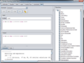

|  |
Grinder: Rewriting System Demo - is a graphical application, intended to demonstrate how expressions
can be iteratively rewritten until no further rewriting is possible. Each of the application's tabs allows the user to experiment with a subset of
rewriters. Individual rewriters can be enabled or disabled by checking them on or off in the list that is visible on the right hand side of the
application. Predefined example expressions can be selected from the drop down box that is situated just below the application tabs. Modifications
to the input context (which represents a constraint under which an expression is to be rewritten) and input expression are saved in an undo buffer.
Any change to these two input fields is marked as being an 'initial input expression' (see below for two possible undo actions). At the bottom
of the application two tabs are available:
- Console: provides textual feedback on rewrite actions performed.
- Trace: similar output to the 'Console' but the information is presented in a nested tree structure form.
This permits the structure of individual expressions to be inspected.
|
|
|
|
 
|
|
|
| |
Undo Input to Initial Step: causes the input and output to revert back to the state they were in the last time the user modified either of the
input fields (manually or by selecting an example). |
| |
Undo Input by a single Step: reverts the input and output fields one rewrite step. |
| |
Single Rewrite Step: attempts a single rewrite, with the selected rewriters, of the input expression under the given contextual constraint. |
| |
Exhaustive Rewrite: will iteratively apply all enabled rewriters to the initial input expression and all intermediate ouputs,
under the given input context, until no further rewrites can be applied. |
 |
Clear: will remove all of the currently displayed information in the 'Console' and 'Trace' tabs at the bottom of the application. |
|
|
|

|
|
|
|
Known Domain Size: Indicates whether or not the domain size of the logical variables in the given input expression are
known in advance by the cardinality computation algorithm. If not known, the output expression will often contain expressions of the following
form:
| type(X) |
which represents the cardinality of the domain of the logical variable X in this example. If the domain size is known, the value in the field
on the right hand side of the check box is used in the cardinality computations.
|
|
Assume Domains Always Large: Indicates to the cardinality computation algorithm if it can assume that the domain is always larger than
the number of unique constants in the given input expression (applicable when dealing with quantification, in particular when the domain size is
unknown). |
|
|